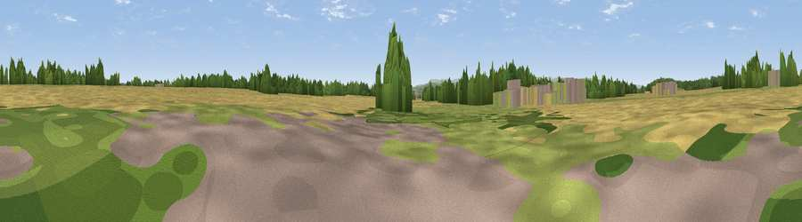

DDL
#37811 in England · top 88% of its area beats it · near PuddingtonThe view, rendered

A 360° render of this exact spot computed from the terrain model, tree cover and land cover — summer colours, afternoon light, calibrated against photographs of famous viewpoints. Real trees, hedges and buildings will differ in detail.
The panorama
Grey silhouette: terrain skyline in each direction (720 bearings, Earth curvature and refraction included). Dashed green: skyline with trees (+15 m) and buildings (+8 m) as obstacles. Blue strip: how far the ground is visible on each bearing.
Where the view opens
Wedge length = distance to the farthest visible ground on that bearing (vegetation-aware). Rings at 10, 25 and 50 km.
What fills the view
49% cropland · 30% grassland · 13% woodland · 8% built-up
Angular shares of the visible panorama (visual magnitude), not map area. Landscape diversity 0.52 (0–1 Shannon).
Key numbers
More beautiful places nearby
The staircase of upgrades: each row has a higher view potential than everything closer. Driving times are estimates from straight-line distance, calibrated against real road routing — check an actual route before setting out.
| Place | Direction | Drive | Score |
|---|---|---|---|
| Viewpoint near Burton | WNW · 3 km | ~6 min | 45.5 |
| Viewpoint near Ness | WNW · 4 km | ~8 min | 46.9 |
| Viewpoint near Ellesmere Port | NE · 8 km | ~16 min | 55.1 |
| Viewpoint near Ellesmere Port | NE · 8 km | ~16 min | 55.5 |
| Viewpoint near Gayton | NW · 10 km | ~19 min | 65.1 |
| Thurstaston Hill | NW · 14 km | ~26 min | 66.8 |
| Helsby Hill | E · 16 km | ~28 min | 74.6 |
| Beacon Hill | E · 19 km | ~32 min | 77.3 |
53.25331, -2.99725 · source: osm viewpoint · position refined by local search. Computed location — check access rights before visiting.